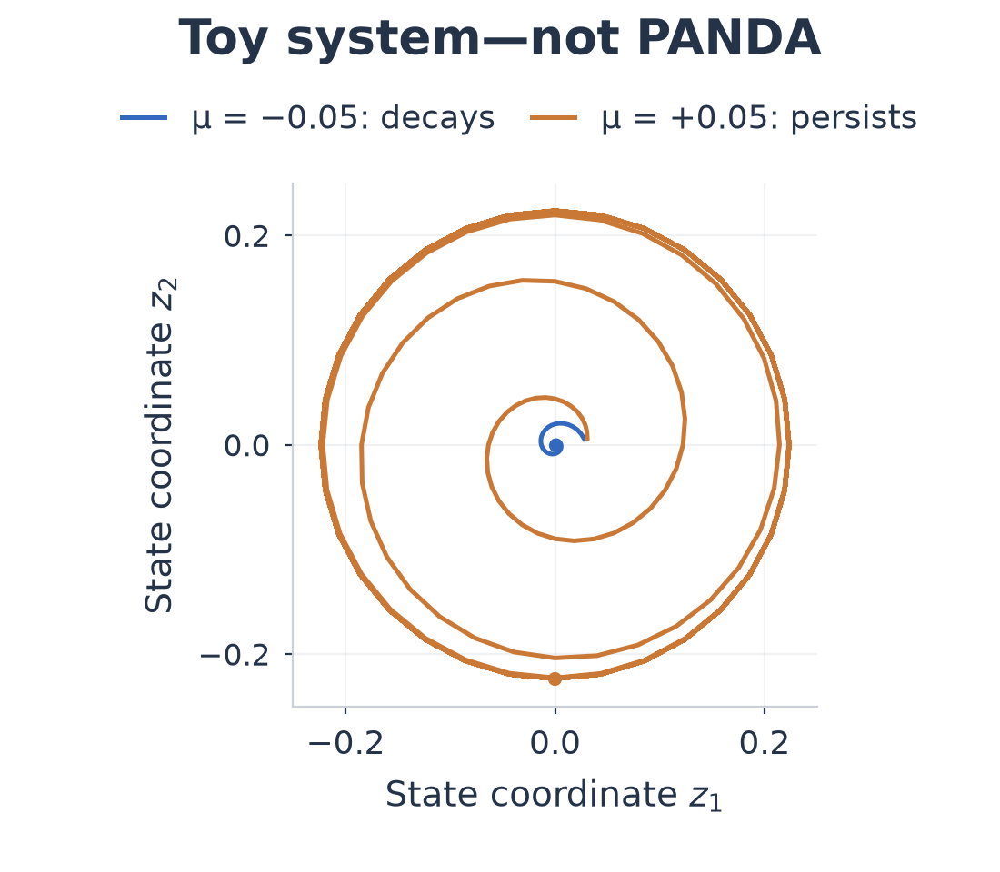
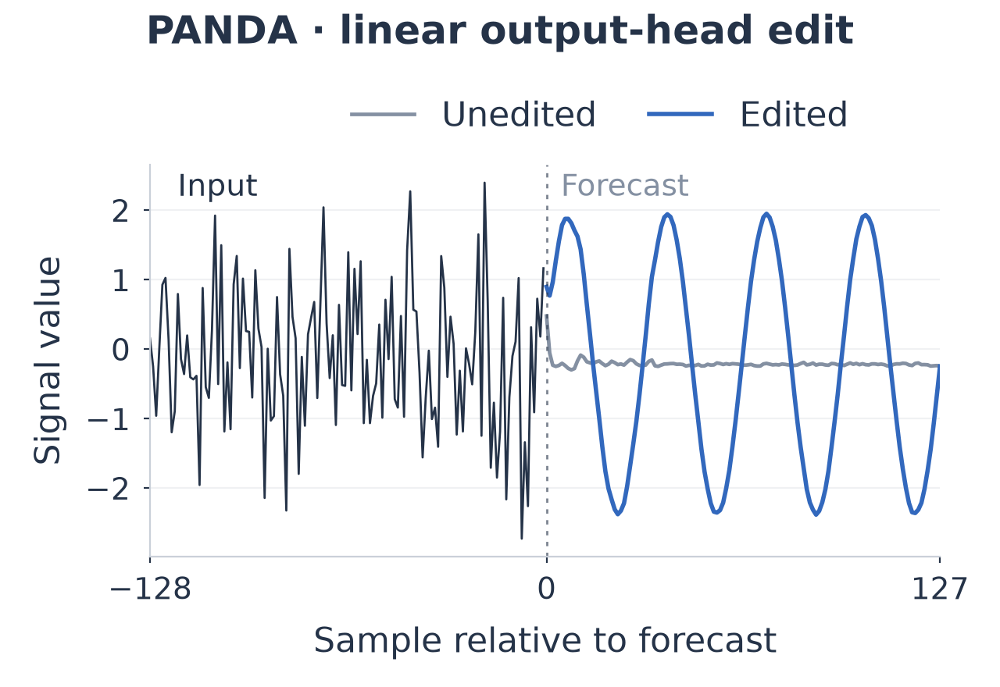

Research note · Draft · September 2026
Looking for a bifurcation inside a forecasting model
Wouldn’t it be interesting if a small change inside a time-series foundation model could push it through a bifurcation? Imagine turning a knob in its activations: below some threshold, disturbances fade; above it, an oscillation sustains itself. That was the starting thought. I wanted to explore whether activation steering could become a way of probing a model’s dynamics.
I used PANDA, a pretrained forecasting transformer for nonlinear dynamics. The experiments moved from editing a single forecast to feeding predictions back into the model. Along the way, another possibility became more interesting: learning a small world model of PANDA’s own internal computation, then using it to plan activation edits.
A parameter for oscillation
The picture I had in mind was a Hopf bifurcation: changing a parameter can destabilize an equilibrium and give rise to periodic motion. The toy example below makes that intuition visible. With one parameter setting, a trajectory spirals toward the origin. With another, it approaches a repeating orbit.

For a discrete update rule, the related transition is called a Neimark–Sacker bifurcation. A pair of complex eigenvalues crossing the unit circle would be part of the evidence to look for. Drawing a loop in a projection, or producing a sinusoidal forecast, would only be a starting observation.
A cycle in PANDA’s forecast
Activation steering gives us a candidate knob. Keep the weights and input fixed, intercept an internal activation \(h\), and add a vector:
The direction \(v\) specifies the edit; \(\alpha\) sets its strength. A Jacobian measures how the forecast responds to a small edit. On simple sinusoidal inputs, input-specific Jacobian directions shifted forecast frequency by roughly 1% in either requested direction across all 96 tested cases. That encouraged a harder question: could a shared direction make a noise context produce a cycle?

Here is the clean example. The edited forecast contains a clear cycle, even though its context is noise. The location of the edit explains much of this result: PANDA’s final head is a linear map, and its pseudoinverse lets us choose an activation vector that adds a desired waveform to the output. This is useful control, but it does not yet tell us that an internal oscillator has appeared. The shared directions tested at earlier layers did not produce equally clean cycles.
Closing the feedback loop
To ask about sustained dynamics, I made a separate system: forecast from a rolling context, append only the first predicted sample, drop the oldest sample, and repeat. The same edit is applied at every call. Now the context is the evolving state, while steering strength is a persistent parameter. Unlike the single-forecast comparison, the input history changes as the loop runs.
I swept strengths and starting contexts and examined long trajectories and local stability. This was an exploratory bifurcation search. Most trajectories reached the preset magnitude cutoff; extending every initial survivor to 8,192 steps still produced no sustained-cycle candidates. Local stability checks also showed instability, without establishing an oscillatory transition.
So this experiment did not establish a Hopf-like bifurcation in PANDA. It leaves the original question open, while showing how much the feedback rule matters. A model trained to predict a block of samples need not behave well when only one sample is repeatedly fed back.
A world model of the model
The part I find most intriguing is treating the frozen network itself as a system we can learn to control. Observe its activations, apply an edit, run the next block, and record what changed. These tuples form an offline dataset of states, actions, and successors.
Inspired by sensorimotor world models, I trained an encoder to compress each 49,152-coordinate activation into 64 coordinates. A forward model predicts the next latent state given an edit; an inverse model tries to recover which edit caused a transition. The hope is that learning both directions will preserve controllable information. A matched PCA representation provides a simpler comparison.
Planning then becomes a small loop: imagine several edits within a fixed eight-dimensional edit space, choose a sequence that approaches the goal, execute its first edit in real PANDA, observe the new activation, and replan. Here a step advances through transformer depth, from H2 toward H6. It does not advance time in the feedback experiment above.
The two goals gave different answers. PCA planning reduced median error toward a supplied activation target by about 94–95%; the learned representation achieved about 26–27%. Asking either learned controller for a particular waveform was much less successful: typical errors stayed near the no-edit baseline. Direct optimization through PANDA did much better, although it required more computation.
The learned model recovered actions accurately, but its waveform readout remained weak. That makes the representation question interesting: which coordinates preserve the consequences of an intervention, rather than merely identifying that it happened?
I still like the bifurcation question. Perhaps useful steering coordinates could eventually let us chart behavioral regimes and search for transitions between them. For now, the open problem is more basic: can we learn an activation space in which a desired change in behavior becomes a predictable trajectory?
Figure data and provenance: saved values, source records, and figure script. The toy, forecast-edit, feedback, and world-model experiments are separate; the figures are redrawn from their saved results.